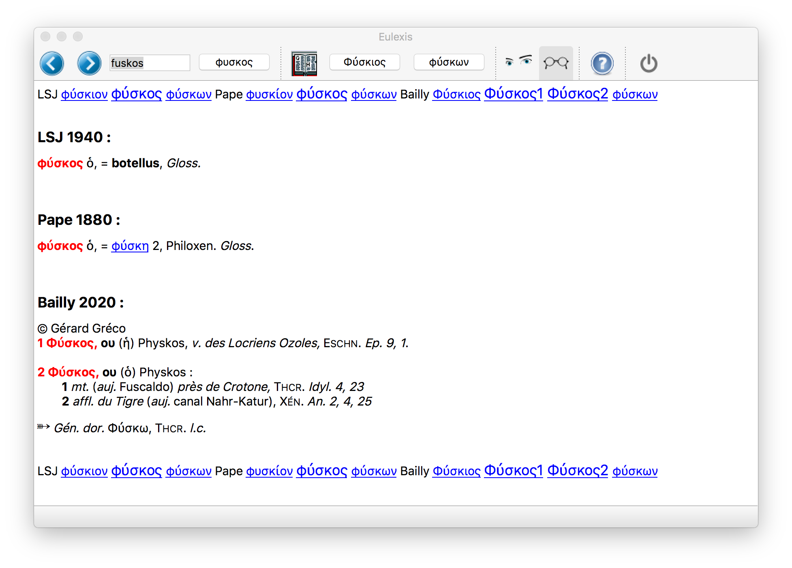

Projet Alpheios-Eulexis pour l’ajout de traduction en Français aux lemmes grecs
Introduction
Historique
Les lemmes d’Eulexis sont grosso modo ceux du LSJ et ils ont été utilisés pour la lemmatisation des formes par Perseus (et ses héritiers). Il y a déjà quelques années (lorsque j’ai développé la version résidente d’Eulexis), j’ai éprouvé le besoin de traduire en Français les traductions anglaises proposées par Diogenes, avec un succès assez mitigé. Depuis, une équipe de bénévoles a mené à bien, sous la direction de Gérard Gréco, le passage en TeX du Bailly. Il m’a semblé naturel de partir de cette version du Bailly pour améliorer les traductions françaises d’Eulexis. J’ai été rejoint sur ce sujet par Bridget Almas qui souhaite ajouter des traductions en Français dans Alpheios.
La magie de l’informatique a permis de mouliner le fichier TeX du Bailly. J’en ai extrait les traductions françaises de beaucoup de lemmes que j’ai ensuite alignées avec les traductions existantes dans Eulexis. Le plus difficile reste à faire : choisir la bonne traduction pour les ~100 000 lemmes grecs qu’Eulexis connaît.
Objectifs
L’objectif principal est de choisir la bonne traduction. Le choix est à faire entre la traduction française dans Eulexis, si elle existe, et la traduction, ou l’une des traductions, issues du Bailly. Toutefois, pour atteindre ce but, il est clair qu’il faudra relire également les traductions anglaises (et éventuellement allemandes) et il serait dommage de ne pas profiter de l’occasion pour les améliorer également.
Méthode
Pour atteindre ces objectifs, nous misons sur un travail reparti sur plusieurs volontaires. L’idée est de partager l’ensemble des données en petits fichiers que chacun peut corriger indépendamment et à son rythme. Pour ne pas devoir d’emblée affronter les 100 000 lemmes du lexique d’Eulexis, j’ai utilisé un fichier d’Helma Dik (de Logeion) qui donne le nombre d’occurrences relevées dans le corpus traité pour les divers lemmes. En se limitant aux lemmes qui apparaissent plus de cinq fois, on couvre presque 99% du corpus avec seulement ~20 000 lemmes. Pour se donner un premier objectif facilement accessible, on a préféré recouper ces 20 000 lemmes en deux en prenant d’abord ceux dont la fréquence est supérieure à 40. C’est donc ce premier lot de ~6 000 lemmes qu’il faut traiter pour commencer.
Bien que les fichiers à traiter soient des fichiers CSV, il n’est pas recommandé de les ouvrir et/ou de les éditer en dehors de l’outil conçu pour cela (et décrit ci-dessous). Cet outil prend un fichier d’origine, first_007.csv par exemple, pour produire un fichier first_007_revu.csv, avec toutes les corrections apportées. Une fois que la re-lecture est terminée, le fichier revu doit être retourné au coordinateur qui les regroupe.
L’outil dans Eulexis
Pour revoir et corriger l’ensemble des traductions d’Eulexis, j’ai développé un outil spécial que l’on trouve dans le menu “Extra/Vérifier les traductions”. S’ouvre alors une boîte de dialogue pour choisir le fichier à traiter. Quand ce premier choix est fait, on voit apparaître une fenêtre d’édition comme celle-ci (à droite) :  En même temps, s’affichent dans la fenêtre principale d’Eulexis (à gauche, en arrière plan) les articles de dictionnaire correspondant au lemme traité. Le choix des dictionnaires à afficher se fait dans le menu “Dicos”. Personnellement, je recommande de les afficher tous : en effet, ils peuvent contenir des informations complémentaires et précieuses.
En même temps, s’affichent dans la fenêtre principale d’Eulexis (à gauche, en arrière plan) les articles de dictionnaire correspondant au lemme traité. Le choix des dictionnaires à afficher se fait dans le menu “Dicos”. Personnellement, je recommande de les afficher tous : en effet, ils peuvent contenir des informations complémentaires et précieuses.
La boîte de dialogue s’ouvre, par défaut, au milieu de la fenêtre principale. Il vaut donc mieux la déplacer pour que la lecture des dictionnaires puisse se faire sans qu’il soit nécessaire de changer de fenêtre active (sur Mac, on peut faire défiler le contenu d’une fenêtre sans qu’elle soit active). Cela permet aussi de revenir par un simple clic sur la boîte de dialogue si on l’a quittée pour aller faire autre chose (en particulier, suivre un renvoi dans les dictionnaires). On peut évidemment faire d’autres choses sans fermer cette boîte de dialogue : consulter le LSJ sur Logeion (le LSJ d’Eulexis a perdu les numéros des sens), aller voir le Pape sur Zeno.org (l’original), parcourir quelque fichier que l’on a sur l’ordinateur ou même répondre à un mail urgent. Si la boîte de dialogue a été enterrée sous d’autres fenêtres, il est possible de la remettre au premier plan en retournant dans le menu “Extra/Vérifier les traductions”. Si le programme voit qu’il y a une boîte de dialogue déjà ouverte, il la met au premier plan plutôt que d’ouvrir un nouveau fichier.
Description
Les cinq premières lignes sont informatives et ne peuvent pas être modifiées. Elles contiennent : 1. un indicateur de progression (ici 1/9) qui donne le numéro du lemme et le nombre total de lemmes à traiter dans ce fichier 2. les lemmes précédent (à gauche, ici il est vide) et suivant (à droite) –cette indication est utile surtout pour les homonymes– 2. les traductions anglaises des lemmes précédent (à gauche, ici il est vide) et suivant (à droite) –cette indication permet d’anticiper pour traiter les homonymes– 3. le lemme à examiner en caractères grecs 4. le lemme à examiner en betacode
Viennent ensuite une ligne de titre Eulexis et trois lignes avec les traductions qui sont déjà dans Eulexis. Dans l’ordre, elles sont en Anglais, Français et Allemand. Ces deux dernières ont été obtenues par traduction automatique de la traduction anglaise, sauf quand je les ai corrigées manuellement. Ces trois traductions sont éditables. Les outils standards (copier/coller à partir de la fenêtre de consultation, sélection d’un mot par double-clic, avance rapide d’un mot ou jusqu’à la fin de la ligne, etc…) sont disponibles comme d’habitude. Chaque ligne peut contenir une cinquantaine de caractères et c’est un maximum pour une définition courte.
La situation avec le Bailly est un peu plus compliquée, car il peut y avoir plusieurs candidats pour un même lemme. En plus de la fenêtre d’édition (qui est plus grande car l’extraction automatique des traductions a parfois donné des traductions trop longues), j’ai dû mettre une comboBox. Après le titre Bailly, la comboBox donne la (ou les) solution(s) trouvée(s). Par convention, je mets un fond de couleur quand cette comboBox requiert une attention redoublée. Si le fond est blanc, il n’y a qu’une solution et elle est exacte. Il n’y a pas lieu de s’en soucier. Si le lemme n’a pas été trouvé dans le Bailly, la comboBox restera vide et sera grisée. La fenêtre d’édition sera aussi désactivée. La seule traduction française disponible est alors celle d’Eulexis qu’il conviendra d’éditer (voir ci-dessus). Si le fond est jaune orangé, il n’y a toujours qu’une solution mais elle est approchée. Elle peut différer du lemme recherché par un accent, un esprit (plus généralement, un signe diacritique) ou une majuscule/minuscule. La conduite à tenir est décrite plus en détails dans la section suivante, avec quelques exemples en fin de document. S’il y a plusieurs solutions possibles, le fond de la comboBox sera vert (solutions exactes) ou rouge (solutions approchées). Il y a alors un choix de plus à effectuer. Le contenu de la fenêtre d’édition est mis à jour à chaque changement d’item dans la comboBox. Lors de la validation (voir plus bas), c’est la traduction affichée qui sera choisie comme nouvelle traduction (donc celle qui correspond au lemme choisi dans la comboBox, éventuellement modifiée).
Nota bene : si le (ou les) lemme(s) proposé(s) par le Bailly ne sont pas bons, il conviendrait de les retirer de la liste. Comme il n’est pas possible de retirer un élément d’une comboBox, le correcteur doit indiquer que le lemme trouvé dans le Bailly ne correspond pas à celui recherché en effaçant la traduction. Il devra alors donner la bonne traduction dans la line d’Eulexis et valider cette solution. Cette règle peut sembler étrange et ne serait pas nécessaire pour la seule traduction. En effet, pour le lexique d’Eulexis, que la traduction soit donnée dans la case du Bailly ou dans celle d’Eulexis ne change rien. Toutefois, la traduction donnée dans la case du Bailly reste associée à une entrée particulière. Implicitement, en validant une traduction du Bailly, on établit un lien (bi-univoque ?) entre le lemme recherché et celui du Bailly. Si un jour quelqu’un veut établir une correspondance entre les entrées du LSJ (qui sont plus ou moins les lemmes d’Eulexis) et celles du Bailly, il devrait pouvoir utiliser ce fichier à condition que nous n’y introduisions pas de lien déplacé.
La ligne de commentaire est facultative : elle sera sauvée dans le fichier revu. Elle sera également affichée à nouveau si on ouvre le fichier revu une deuxième fois ou que l’on revient sur un lemme déjà traité (avant d’avoir terminé le fichier). Il est recommandé de l’utiliser si on souhaite laisser des indications, en particulier lorsque l’on utilise l’option “Remettre le choix” (voir ci-dessous).
La ligne avec les trois boutons-radios permet de choisir la traduction qui figurera ultérieurement dans Eulexis (pas tout de suite : il faut regrouper les diverses corrections avant de proposer une mise à jour du lexique). Par défaut, le programme choisit la traduction du Bailly si elle existe. Si le lemme a déjà été revu (soit parce que l’on est revenu en arrière, soit parce que l’on a ouvert un fichier revu), c’est la traduction d’Eulexis qui est validée par défaut (elle contient la traduction qui a été sélectionnée !). Le dernier bouton Remettre le choix doit être utilisé avec parcimonie et être réservé aux cas difficiles ou indécidables. Il est recommandé de laisser un commentaire. À un moment ou à un autre, quelqu’un devra faire un choix…
La dernière ligne porte les boutons d’action. A priori, le seul à utiliser est le dernier à droite qui sert à valider les modifications et les choix. C’est aussi le bouton par défaut, ce qui signifie que si l’on appuie sur la touche Return, les modifications seront validées. Ça ne fonctionne pas si le curseur est dans la fenêtre multiligne d’édition de la traduction du Bailly. En effet, dans ce cas-là, le système intercepte le Return pour insérer un saut de ligne dans ladite fenêtre. Après la validation, le programme passe au lemme suivant. Le bouton de gauche permet de revenir au lemme précédent (dans l’image ci-dessus, il est vide car on est au début du fichier).
Attention ! ce bouton ne valide pas les modifications en cours. Si on a déjà modifié les traductions et que l’on veut quand même revenir en arrière, il conviendra de valider d’abord et de revenir de deux pas en arrière.
La sauvegarde des données se fait automatiquement à la fin du fichier. Le bouton Save n’est à utiliser que si on doit laisser le travail en plan et que l’on craint une possible panne de l’ordinateur. Une fois la sauvegarde faite, seront proposées deux options : continuer ou interrompre la vérification.
Attention ! comme le bouton de retour en arrière, le bouton Save ne valide pas les modifications en cours. Ce n’est pas un problème si on continue son travail. En revanche, les modifications présentes sur l’écran mais pas validées seront perdues si on choisit d’interrompre l’activité.
Une vérification interrompue peut être reprise en ouvrant le fichier revu. Le programme avance automatiquement jusqu’au premier lemme qui n’a pas été revu. Si l’ensemble du fichier a été revu, on recommence au début.
Détails
La comboBox
Comme je le disais plus haut, la comboBox a été introduite parce que, dans certains cas, plusieurs entrées du Bailly correspondent au lemme demandé. D’autre part, si le lemme recherché n’a pas été trouvé dans le Bailly, je le dépouille de tous ses signes diacritiques et d’une éventuelle majuscule et je cherche à nouveau dans le Bailly. Cela permet de retrouver des mots pour lesquels l’accent n’est pas bien déterminé (ou qui a des variantes). Les trémas sont aussi souvent pomme de discorde. Mais ce faisant, on introduit inévitablement des faux positifs qu’il faudra éliminer. À l’affichage des dictionnaires dans Eulexis, la recherche se fait également sans tenir compte des signes diacritiques et de la majuscule. Donc, l’ensemble des articles affichés dans la fenêtre principale ne sont pas nécessairement pertinents.
Le cas le plus courant (90% dans le premier lot) est celui où une seule solution exacte a été trouvée. Le cas où il y a deux ou plus solutions exactes se produit pour 8% des lemmes. Les 2% restant se partagent équitablement entre les cas où je n’ai pas trouvé le lemme dans le Bailly et ceux où il y a une ou plusieurs solutions approchées. J’ai enrichi le second lot avec les cas approchés trouvés dans l’ensemble des lemmes (y compris ceux de fréquence faible), si bien que les pourcentages y seront différents. Les mots que je n’ai pas trouvés dans le Bailly sont plus aussi nombreux parmi les lemmes moins fréquents.
Pour que le correcteur sache immédiatement si la comboBox est peuplée ou pas, je lui ai donné un fond de couleur. Lorsque le fond est blanc ou jaune-orangé, il n’y a qu’un seul item dans la comboBox et il est inutile d’aller l’explorer. Le fond blanc nous dit de plus que la solution est exacte. Alors que le jaune-orangé, plus accrocheur, nous prévient qu’il faut redoubler d’attention car la solution proposée n’est qu’approchée. Lorsque le fond est vert ou rouge, il y a plusieurs items dans la comboBox et il faut faire un choix supplémentaire entre ces items. Le fond vert, plus doux et apaisant, nous dit que les solutions sont exactes. Le fond rouge, plus agressif, nous dit que les solutions sont approchées.
Remarque : lorsque j’ai trouvé une solution exacte, je ne suis pas allé chercher des solutions approchées. Il n’y a donc pas de cas mixte où une solution serait exacte et une autre pas. Je ne sais pas si le cas se produit, mais il se pourrait que mon programme ait trouvé une solution exacte alors que la bonne solution serait approchée. Il y a en effet des cas pathologiques comme, par exemple, arma : les dicos s’accordent pour dire qu’il y en a trois, signifiant respectivement, chariot, union et nourriture. Sauf qu’ils ne sont pas du même avis pour l’esprit. Le LSJ et le Pape ont deux homonymes ἄρμα et un lemme non-ambigu ἅρμα, alors que le Bailly donne deux ἅρμα et un seul ἄρμα. Je n’ai évidemment pas d’opinion sur le sujet, mais si vous êtes convaincus que c’est une erreur de Bailly, n’hésitez pas à le signaler à Gérard Gréco. D’ailleurs, c’est vrai de manière très générale : toute erreur trouvée, signalée et corrigée est une erreur en moins !
Les boutons-radios
Le principe des boutons-radios est qu’il faut en choisir un (et un seul). Ils conviennent donc parfaitement pour notre mission première qui consiste à choisir entre la traduction française d’Eulexis et une nouvelle traduction issue du dépouillement automatique du Bailly. Toutefois, nous avons envisagé une troisième possibilité qui est de Remettre le choix à plus tard. Ce non-choix n’est pas une solution à privilégier. Tôt ou tard, d’une façon ou d’une autre, quelqu’un devra décider d’une traduction à donner au lemme. Il faut donc considérer ce non-choix comme un Joker que l’on peut tirer de sa manche. Comme je l’ai dit plus haut, un commentaire sera bienvenu pour aider celui qui héritera du problème.
A priori, le programme fait un choix raisonnable pour l’utilisateur : - si le Bailly propose une ou plusieurs solutions, la traduction issue du Bailly est sélectionnée - si le Bailly n’a pas le lemme demandé, la traduction d’Eulexis est la seule possible - si le lemme a déjà été examiné, la traduction d’Eulexis (la nouvelle) est privilégiée, sauf si le choix a été remis la première fois (auquel cas, le choix reste sur cette position).
Bien évidemment, le correcteur peut changer ce choix par défaut, en particulier, si la traduction initiale d’Eulexis est satisfaisante et meilleure que celle tirée du Bailly.
Le bouton de “Validation”
Le bouton de Validation est la pièce maîtresse du dispositif. Associé au choix fait à l’aide des boutons-radios, il enregistre la nouvelle traduction française pour le lemme traité. Il enregistre également les traductions anglaise et allemande qui peuvent avoir été modifiées. Lorsque le choix est fait en faveur de la traduction du Bailly, l’ancienne traduction d’Eulexis est conservée parmi celles du Bailly. On pourra donc éventuellement y revenir. Une conséquence de ce transfert de la traduction d’Eulexis vers les traductions du Bailly peut faire changer la couleur de la comboBox si on revient en arrière. Seulement dans le cas de solutions approchées où elle pourra virer du jaune-orangé au rouge.
En validant une traduction du Bailly, on fait plus que d’adopter une nouvelle traduction : on établit un lien entre le lemme d’Eulexis (qui est grosso modo celui du LSJ) et une entrée du Bailly. Considérons à titre d’exemple, un cas où la traduction actuelle d’Eulexis est la même que celle tirée du Bailly. Je peux donc choisir indifféremment l’une ou l’autre ça ne changera pas la traduction finale (puisqu’elles sont égales). Toutefois, est-ce que l’information apportée par les deux choix est la même ? La réponse est évidemment non. En effet, lorsque je choisis la traduction existante dans Eulexis, je n’apporte aucune information sur le Bailly. En revanche, en choisissant la traduction du Bailly, je dis implicitement que cette entrée du Bailly correspond au lemme recherché. Je donne plus bas quelques exemples représentatifs.
Le bouton de retour
Le bouton de retour (à gauche) a été ajouté tardivement. Il n’est pas nécessaire mais permet ne revenir en arrière si jamais on a un doute. On peut évidemment remonter jusqu’au début du fichier (mais pas au delà) en appuyant plusieurs fois sur ce bouton.
Attention ! ce bouton ne valide pas les modifications en cours. Si on a déjà modifié les traductions et que l’on veut quand même revenir en arrière, il conviendra de valider d’abord et de revenir de deux pas en arrière.
Le bouton “Save”
Ce bouton est a priori inutile. En effet, le travail sera sauvé automatiquement quand la fin du fichier sera atteinte. À moins d’avoir un ordinateur particulièrement instable ou de savoir devoir interrompre l’activité pendant longtemps, on pourra se passer de ce bouton Save.
Lorsque la sauvegarde est effectuée, le programme propose de reprendre la correction ou de l’interrompre. Une vérification interrompue peut être reprise en ouvrant le fichier revu. Le programme avance automatiquement jusqu’au premier lemme qui n’a pas été revu. Si l’ensemble du fichier a été revu, on recommence au début.
Attention ! comme le bouton de retour en arrière, le bouton Save ne valide pas les modifications en cours. Ce n’est pas un problème si on continue son travail. En revanche, les modifications présentes sur l’écran mais non validées seront perdues si on choisit d’interrompre l’activité.
Le bouton “Undo”
Comme son nom l’indique, le bouton Undo permet de défaire les modifications en cours. Ces dernières seront évidemment perdues, sauf à annuler l’opération pendant qu’il est encore temps. Si on effectue cette opération sur un lemme déjà traité et validé (en utilisant le bouton de retour), on revient aux données qui étaient dans le fichier quand on l’a ouvert la première fois. Ce bouton Undo ne permettra pas de revenir à une version intermédiaire qui aurait été sauvée avec le bouton Save.
Le Ctrl-Z (Cmd-Z sur Mac) peut être un mode de revenir en arrière plus subtil. En effet, il permet de défaire les modifications apportées cases par cases. Par exemple imaginons que nous ayons modifié la traduction anglaise, puis la traduction allemande. Nous nous ravisons alors pour la traduction anglaise, souhaitant revenir à ce qu’il y avait avant (tout en voulant conserver les modifications faites sur la traduction allemande). Il suffit de placer le curseur dans la ligne de la traduction anglaise et à faire Ctrl-Z. C’est magique : la modification de la traduction anglaise est annulée et ce qui a été fait après dans la case des traductions allemandes est maintenu.
Remarque : cela ne fonctionne pas dans le cadre des traductions du Bailly, si on change de lemme avec la comboBox (cela fonctionne si on n’a pas changé de lemme).
Si on ouvre un fichier revu et que le fichier d’origine est resté à côté du fichier créé (ce qui est normalement le cas), le correcteur peut revenir aux données telles qu’elles étaient dans le fichier d’origine (annulant ainsi toutes les modifications) ou aux données déjà revues (n’annulant que les dernières modifications).
Exemples
On a vu plus haut que le choix d’une traduction du Bailly est plus que la simple attribution d’une nouvelle traduction au lemme, puisqu’il lie ce dernier à une entrée particulière du Bailly. Si on va jusqu’au bout de ce raisonnement et que l’on considère l’exemple d’ὁράω
ὁράω to see, look, be able to see ὁράω [tr. intr. ] voir ; voir voir, regarder, pouvoir voir
La traduction d’Eulexis (dernière colonne) est meilleure que celle tirée du Bailly (avant-dernière colonne). Cette dernière semble même idiote, mais le premier “voir” correspond à l’emploi intransitif de ce verbe et le second à l’emploi transitif. On serait donc tenté d’adopter la traduction d’Eulexis, mais il vaudrait mieux modifier la traduction du Bailly (en prenant des éléments qu’il donne ensuite) et la choisir. Toutefois, étant conscient que cela imposerait beaucoup de travail supplémentaire et en considérant qu’il n’y a pas ici d’ambiguïté possible, la première solution est acceptable.
Exemples d’homonymes
Si mon programme de découpage en petits fichiers a fonctionné correctement, tous les homonymes devraient se trouver grouper. Attention, ne sont pas considérés comme homonymes des lemmes qui diffèrent par une majuscule initiale. Par exemple, on aura Ὥρα et ὥρα dans deux fichiers séparés. Les cas d’homonymie ne sont pas rares (sans être fréquents : ~8% des cas), mais il ne m’a pas été facile d’en dénicher un simple :
στεῖρα1 a ship's keel 2 στεῖρα [gens : ας, adj. f. ]@1 στεῖρα [gens : ης (ἡ) ] stérile@étrave d'un navire la quille d'un navire
στεῖρα2 that has not brought forth young 2 στεῖρα [gens : ας, adj. f. ]@1 στεῖρα [gens : ης (ἡ) ] stérile@étrave d'un navire Cela n'a pas donné naissance à de jeunes
Par chance, la numérotation des homonymes est ici la même. Pour στεῖρα1 (traduit en anglais par a ship’s keel), il faudra supprimer la traduction stérile du premier item pour garder celle de 1 στεῖρα. Pour στεῖρα2, on gardera stérile et on supprimera étrave d’un navire. En sélectionnant à chaque fois la bonne traduction (c’est à dire que l’on affiche, juste avant de valider, la solution que l’on souhaite retenir). On peut aussi remarquer que la traduction anglaise est moins précise que celle du Bailly, qui est en accord avec celle du LSJ. J’aurais donc tendance à compléter la traduction anglaise en donnant forepart of a ship΄s keel.
Il y a d’autres exemples plus délicats. Il n’y a qu’un seul lemme ** βρῶμος** dans Eulexis, alors que les Bailly et LSJ connaissent deux homonymes.
βρῶμος stink, noisome smell 2 βρῶμος [gens : ου (ὁ) ]@1 βρῶμος > βρῶμα [gens : ου (ὁ) ] odeur infecte@ce qu'on mange ; ce qui est mangé ou rongé ; action de dévorer puant, odeur bruyante
Ce caveat étant posé, on sélectionnera la traduction odeur infecte de 2 βρῶμος. La question d’effacer ou pas la traduction de 1 βρῶμος (qui est celle de βρῶμα) peut se poser. En effet, ce sens pourrait être employé quelque part. La question se pose de façon plus manifeste pour σφόδρα :
σφόδρα very, exceedingly σφόδρα [subst. adv. ]@τὸ σφόδρα (in σφόδρα) [subst. adv. ] fortement, avec véhémence ; sévèrement, durement ; avec une précision rigoureuse (définir) ; très, fort, tout à fait@la véhémence
La traduction anglaise suggère fortement qu’il s’agit ici de l’adverbe : on validera donc le premier choix (en raccourcissant la traduction ?). Toutefois, l’emploi de ce mot comme substantif n’est pas absurde. Le LSJ dit d’ailleurs aussi, dans l’article σφόδρα (adv.), τὸ σ., = σφοδρότης, en parfait accord avec Bailly.
Les traductions anglaises de συννέω et συννέω2 sont les mêmes, alors que le LSJ donne bien deux homonymes différents.
συννέω to pile or heap together, heap up 3 συννέω@2 συννέω@1 συννέω entasser, amonceler@filer ou tisser ensemble@nager avec
συννέω2 pile 3 συννέω@2 συννέω@1 συννέω entasser, amonceler@filer ou tisser ensemble@nager avec
Avec la difficulté supplémentaire que Bailly connaît trois homonymes pour ce mot. Quel est alors la traduction à donner à συννέω2 ? Je suppose nager avec puisque c’est la traduction du 2nd homonyme du LSJ.
Le cas de καταδέω est surprenant, car Eulexis en a trois homonymes (dont deux avec la même traduction) alors que les dicos n’en ont que deux.
καταδέω to bind, take prisoner, convict, cast a spell on 2 καταδέω@1 καταδέω manquer de, être en arrière de ; être inférieur à@lier solidement, attacher fortement ; bander, fermer ; condamner après avoir convaincu ; attacher pour soi ou à soi ; lier à soi (par un serment, etc.)
καταδέω1 to bind, take prisoner, convict, cast a spell on 2 καταδέω@1 καταδέω manquer de, être en arrière de ; être inférieur à@lier solidement, attacher fortement ; bander, fermer ; condamner après avoir convaincu ; attacher pour soi ou à soi ; lier à soi (par un serment, etc.)
καταδέω2 lack 2 καταδέω@1 καταδέω manquer de, être en arrière de ; être inférieur à@lier solidement, attacher fortement ; bander, fermer ; condamner après avoir convaincu ; attacher pour soi ou à soi ; lier à soi (par un serment, etc.)
On va suivre les traductions anglaises et associer καταδέω et καταδέω1 à 1 καταδέω et καταδέω2 à 2 καταδέω. A priori, l’un des deux lemmes καταδέω et καταδέω1 devrait pouvoir être éliminé, mais cela dépasse largement le but que l’on s’est donné ici.
Exemple approché (juste)
κόιλος hollow κοῖλος [des : η, ον subst. ] creux ; creusé, travaillé en creux, ciselé creux
Le lemme d’Eulexis est κόιλος alors que les dicos s’accordent sur κοῖλος comme entrée principale. Tous mentionnent aussi la forme κόϊλος. Les traductions concordent également, il semble donc légitime de lier les deux lemmes.
Exemple approché (faux)
ἐφήβια celebration on reaching adolescence ἐφηϐία [gens : ας (ἡ) ] adolescence ; > ἐφηϐεῖον Célébration à l'adolescence
La forme ἐφήβια (avec l’accent sur le ή) ne se trouve que dans le Pape et semble bien désigner ce qu’indique la traduction anglaise. La forme trouvée dans le Bailly ἐφηϐία (accent sur le ί) se trouve, elle, dans tous les dicos et désigne l’adolescence et rien d’autre (ou presque). On effacera donc la traduction du Bailly et on retouchera la traduction d’Eulexis pour quelque chose du genre fête pour célébrer l’adolescence.
Dernier exemple, plus compliqué :
φύσκος botellus 2 Φύσκος [gens : ου (ὁ) ]@1 Φύσκος [gens : ου (ἡ) ] Physkos@Physkos, (v.) Botellus
Les deux entrées du Bailly sont approximatives et ne conviennent ni l’une ni l’autre.  Ce sont en effet deux noms de lieux, l’un masculin (montagne ou rivière) et l’autre féminin (ville). Il faut donc les effacer toutes les deux et se reporter sur la traduction d’Eulexis. “Botellus” est la traduction latine du mot grec et ne convient pas vraiment. Une solution est d’aller voir dans Collatinus (i.e. dans le Gaffiot) la traduction française de ce mot (qui renvoie d’ailleurs à “botulus”). On trouve alors boudin, saucisson, [en gén.] boyau farci. Dans l’article φύσκος du Pape, on a un renvoi à φύσκη 2, avec une difficulté manifeste liée à ce 2 alors que l’article correspondant ne contient pas de numéro. 
Situation d’autant plus compliquée que le Pape donne deux sens bien distincts (séparés par un –) et un troisième sens plus ou moins caché (en 2e position). Le dernier sens de callosité ou ampoule dans les mains est absent du Bailly (bien que présent dans le LSJ) et ne colle pas avec botellus. On serait tenté de recopier la traduction du Bailly (pour φύσκη) gros intestin, d’où viande dont on le farcit, boudin, en ajoutant saucisson repris dans l’abrégé. Mais subsiste le doute sur la première partie de cette traduction qui est le gros intestin…
Genre ?
Le pendant de l’exemple précédent est Φύσκος, avec une majuscule :
Φύσκος botellus 2 Φύσκος [gens : ου (ὁ) ]@1 Φύσκος [gens : ου (ἡ) ] Physkos@Physkos, (v.)
Ici, on a un nouveau problème, puisque le genre de Φύσκος s’est perdu ! Comment rectifier cela ? Les deux traductions du Bailly sont potentiellement correctes et il serait maladroit d’en modifier une pour la valider. Il n’y a donc que la traduction d’Eulexis que je peux modifier. Et comme la traduction anglaise était erronée (le LSJ ne connaît pas ce nom de lieu), il conviendrait de les corriger toutes. Écrire quelque chose comme “Physkos (various places)” en Anglais et “Physkos (fém. : v. ; masc. : mt. ou fl.)” en Français.
Toutefois, Morfw semble ne le connaître que comme masculin, mais il faudrait aller vérifier les huit occurrences… Si c’était vrai, il suffirait de valider “2 Φύσκος”, sans effacer la traduction de “1 Φύσκος”.